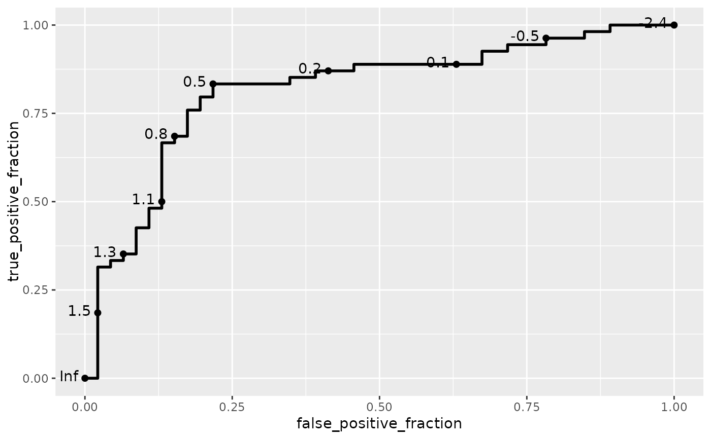
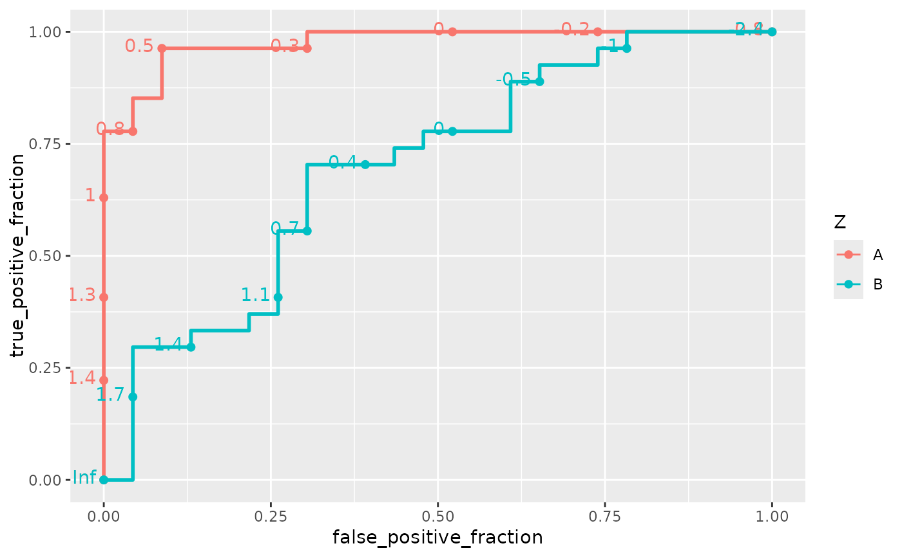
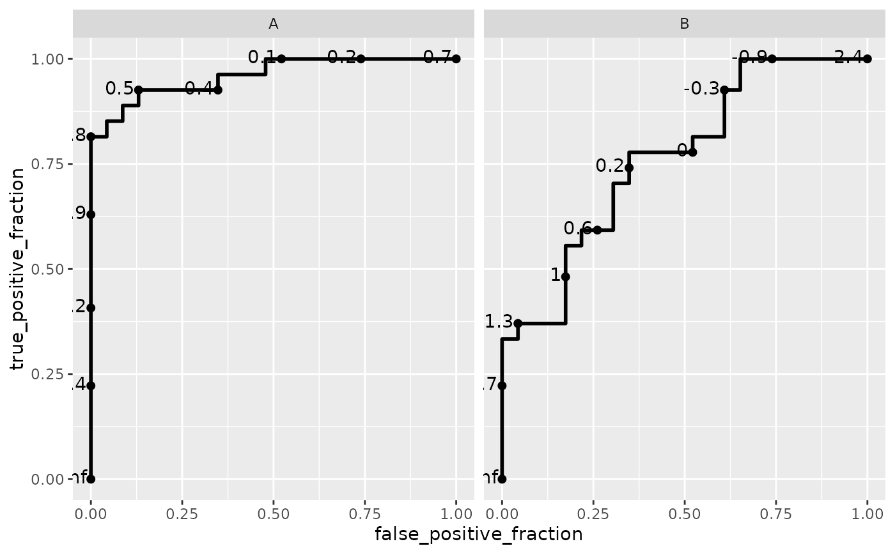
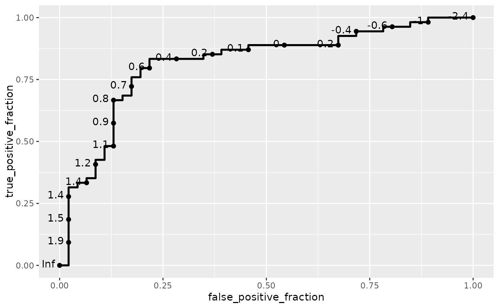
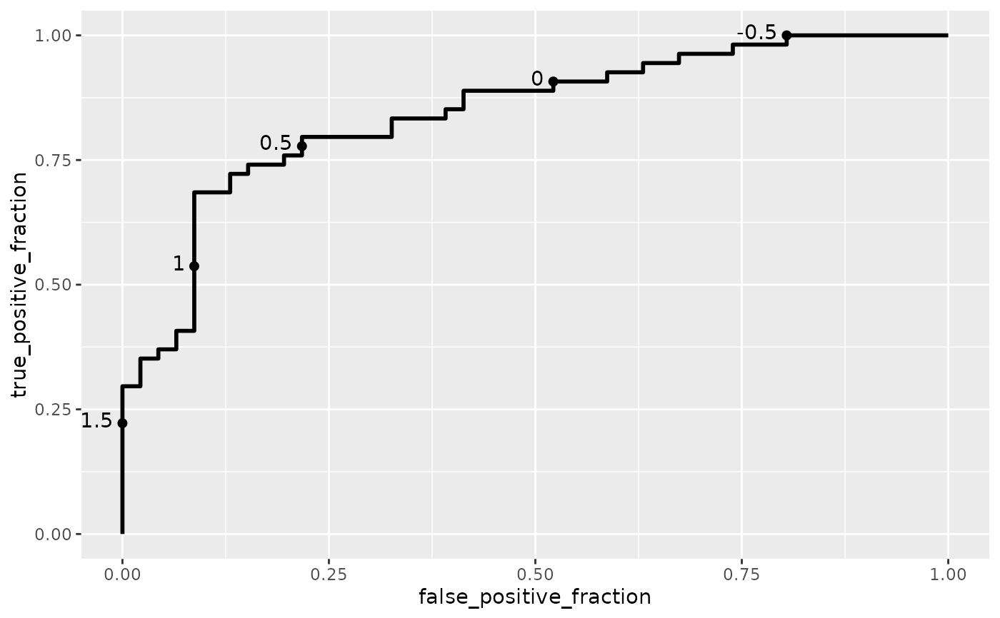
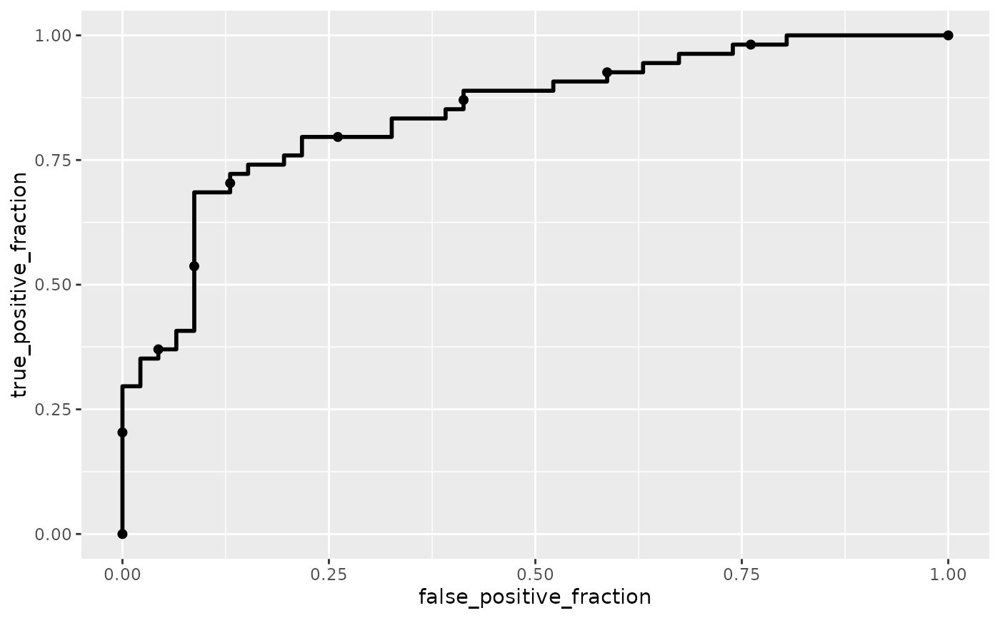
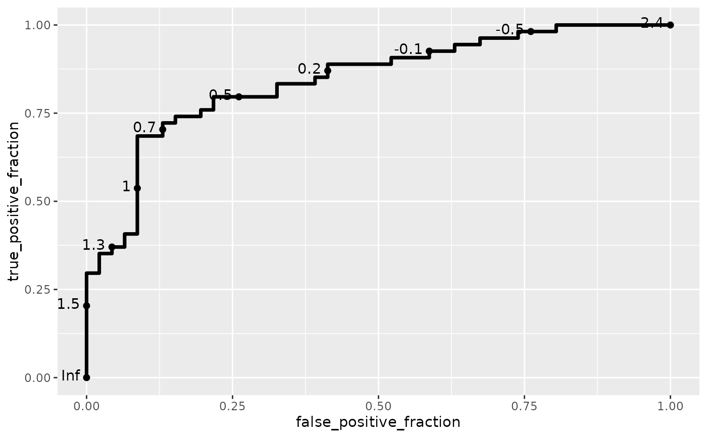

Display the empirical ROC curve. Useful for characterizing the classification accuracy of continuous measurements for predicting binary states
Usage
GeomRoc
geom_roc(
mapping = NULL,
data = NULL,
stat = "roc",
n.cuts = 10,
arrow = NULL,
lineend = "butt",
linejoin = "round",
linemitre = 1,
linealpha = 1,
pointalpha = 1,
pointsize = 0.5,
labels = TRUE,
labelsize = 3.88,
labelround = 1,
na.rm = TRUE,
cutoffs.at = NULL,
cutoff.labels = NULL,
position = "identity",
show.legend = NA,
inherit.aes = TRUE,
...
)Arguments
- mapping
Set of aesthetic mappings created by
aes(). If specified andinherit.aes = TRUE(the default), it is combined with the default mapping at the top level of the plot. You must supplymappingif there is no plot mapping.- data
The data to be displayed in this layer. There are three options:
If
NULL, the default, the data is inherited from the plot data as specified in the call toggplot().A
data.frame, or other object, will override the plot data. All objects will be fortified to produce a data frame. Seefortify()for which variables will be created.A
functionwill be called with a single argument, the plot data. The return value must be adata.frame, and will be used as the layer data. Afunctioncan be created from aformula(e.g.~ head(.x, 10)).- stat
Use to override the default connection between
geom_rocandstat_roc.- n.cuts
Number of cutpoints to display along each curve
- arrow
Arrow specification, as created by
arrow- lineend
Line end style (round, butt, square)
- linejoin
Line join style (round, mitre, bevel)
- linemitre
Line mitre limit (number greater than 1)
- linealpha
Alpha level for the lines, alpha.line is deprecated
- pointalpha
Alpha level for the cutoff points, alpha.point is deprecated
- pointsize
Size of cutoff points, size.point is deprecated
- labels
Logical, display cutoff text labels
- labelsize
Size of cutoff text labels
- labelround
Integer, number of significant digits to round cutoff labels
- na.rm
Remove missing values from curve
- cutoffs.at
Vector of user supplied cutoffs to plot as points. If non-NULL, it will override the values of n.cuts and plot the observed cutoffs closest to the user-supplied ones.
- cutoff.labels
vector of user-supplied labels for the cutoffs. Must be a character vector of the same length as cutoffs.at.
- position
A position adjustment to use on the data for this layer. This can be used in various ways, including to prevent overplotting and improving the display. The
positionargument accepts the following:The result of calling a position function, such as
position_jitter(). This method allows for passing extra arguments to the position.A string naming the position adjustment. To give the position as a string, strip the function name of the
position_prefix. For example, to useposition_jitter(), give the position as"jitter".For more information and other ways to specify the position, see the layer position documentation.
- show.legend
logical. Should this layer be included in the legends?
NA, the default, includes if any aesthetics are mapped.FALSEnever includes, andTRUEalways includes. It can also be a named logical vector to finely select the aesthetics to display. To include legend keys for all levels, even when no data exists, useTRUE. IfNA, all levels are shown in legend, but unobserved levels are omitted.- inherit.aes
If FALSE, overrides the default aesthetics, rather than combining with them.
- ...
Other arguments passed on to
layer()'sparamsargument. These arguments broadly fall into one of 4 categories below. Notably, further arguments to thepositionargument, or aesthetics that are required can not be passed through.... Unknown arguments that are not part of the 4 categories below are ignored.Static aesthetics that are not mapped to a scale, but are at a fixed value and apply to the layer as a whole. For example,
colour = "red"orlinewidth = 3. The geom's documentation has an Aesthetics section that lists the available options. The 'required' aesthetics cannot be passed on to theparams. Please note that while passing unmapped aesthetics as vectors is technically possible, the order and required length is not guaranteed to be parallel to the input data.When constructing a layer using a
stat_*()function, the...argument can be used to pass on parameters to thegeompart of the layer. An example of this isstat_density(geom = "area", outline.type = "both"). The geom's documentation lists which parameters it can accept.Inversely, when constructing a layer using a
geom_*()function, the...argument can be used to pass on parameters to thestatpart of the layer. An example of this isgeom_area(stat = "density", adjust = 0.5). The stat's documentation lists which parameters it can accept.The
key_glyphargument oflayer()may also be passed on through.... This can be one of the functions described as key glyphs, to change the display of the layer in the legend.
Computed variables
- false_positive_fraction
estimate of false positive fraction
- true_positive_fraction
estimate of true positive fraction
- cutoffs
values of m at which estimates are calculated
See also
See geom_rocci for
displaying rectangular confidence regions for the empirical ROC curve, style_roc for
adding guidelines and labels, and direct_label for adding direct labels to the
curves. Also export_interactive_roc for creating interactive ROC curve plots for use in a web browser.
Examples
D.ex <- rbinom(50, 1, .5)
rocdata <- data.frame(D = c(D.ex, D.ex),
M = c(rnorm(50, mean = D.ex, sd = .4), rnorm(50, mean = D.ex, sd = 1)),
Z = c(rep("A", 50), rep("B", 50)))
ggplot(rocdata, aes(m = M, d = D)) + geom_roc()

# \donttest{
ggplot(rocdata, aes(m = M, d = D, color = Z)) + geom_roc()

ggplot(rocdata, aes(m = M, d = D)) + geom_roc() + facet_wrap(~ Z)

ggplot(rocdata, aes(m = M, d = D)) + geom_roc(n.cuts = 20)

ggplot(rocdata, aes(m = M, d = D)) + geom_roc(cutoffs.at = c(1.5, 1, .5, 0, -.5))

ggplot(rocdata, aes(m = M, d = D)) + geom_roc(labels = FALSE)

ggplot(rocdata, aes(m = M, d = D)) + geom_roc(size = 1.25)

# }